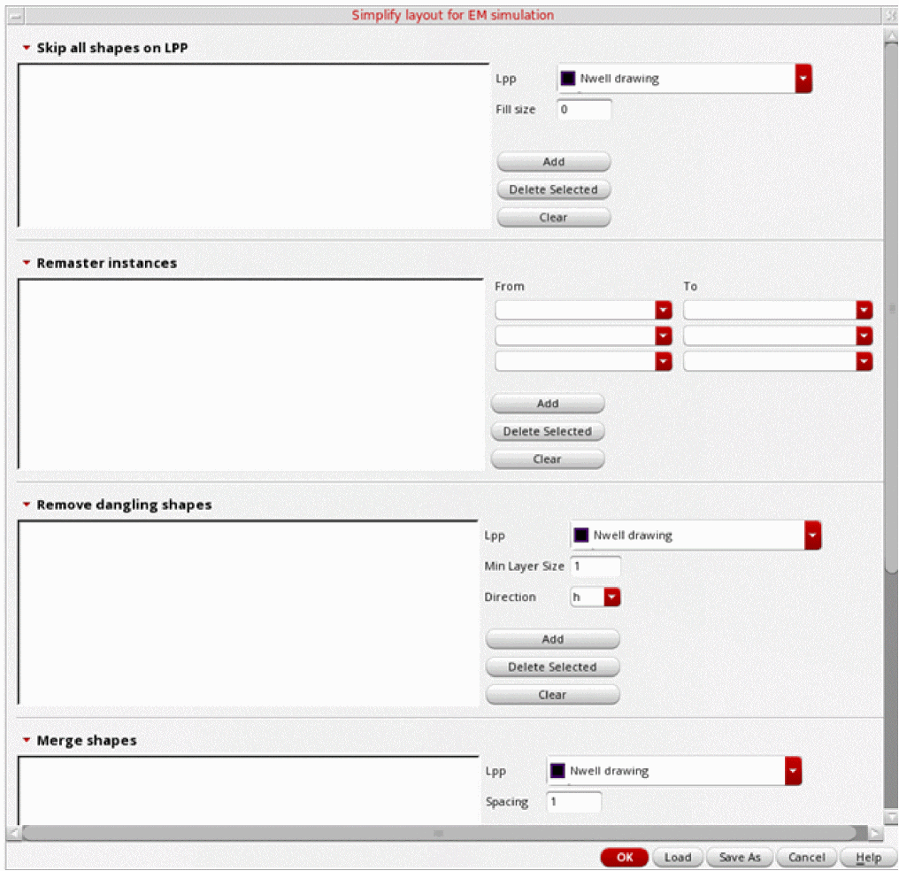

Specifying Shape Simplification Options for IC Layouts
After selecting shapes for inclusion in a model, you can specify shape simplification options that can be considered by the tool while preparing the model for submission to the electromagnetic solver. These options are used to reduce fine details in those areas of the layout that might not impact the result of electromagnetic simulation. For example, you can remove small dangling shapes or merge closely placed shapes. Such changes reduce the number of shapes to be considered during the simulation run and improves the speed of the electromagnetic simulation run.
Using the setup on the Pre-Process tab, you can configure a shape simplification setup with details of the shapes and the simplification activities to be performed for them. These settings can be saved in a recipe file, which is by default saved in the current working directory. A recipe file can be loaded later to reuse the settings.
To specify the settings for shape simplification:
-
Click Setup on the Pre-Process tab of the Electromagnetic Solver assistant.
The Simplify layout for EM simulation form is displayed.
This form contains six sections in which you can specify options to simplify shapes according to your layout and shapes selected in the model.
Related Topics
Specifying Options to Skip Shapes on Selected LPPs
Specifying Options to Change Instance Masters
Specifying Options to Remove Dangling Shapes
Specifying Options to Merge Shapes
Specifying Options to Smooth Shape Steps
Return to top